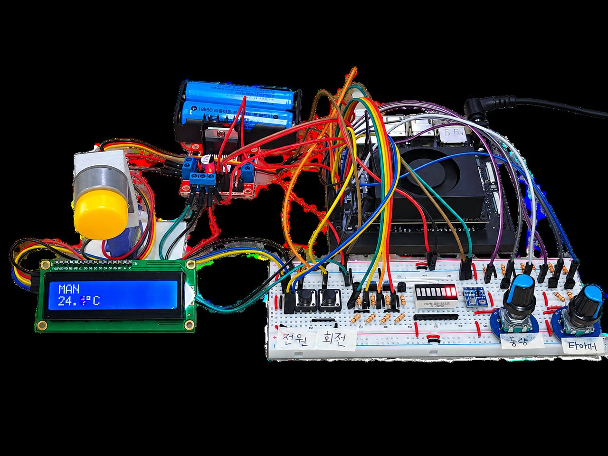

2026.10 · 팀 4인
Linux 커널 드라이버 기반 스마트 선풍기
Jetson Orin Nano 커널 드라이버와 사용자 공간 앱으로 제어하는 선풍기
1. 프로젝트 개요
- 프로젝트명
- Linux 커널 드라이버 기반 스마트 선풍기
- 수행기간
- 2026.10.08 ~ 2026.10.13
- 수행인원
- 4인
- 담당역할
- DC 모터·서보·LED 커널 드라이버, Device Tree 오버레이 핀 설정, 전원·회전 버튼 입력 추가, 하드웨어 배선·전원 구성, 통합 오류 수정
- 사용 기술
- C, Linux Kernel Module(misc device, ioctl), Device Tree overlay, Jetson Orin Nano, L298N, SG90
- 담당 코드
driver/motor/,driver/servo/,driver/led/,driver/fan_input/button_input.c,dts/fan-overlay.dts,app/src/motor.c,app/src/led.c- 링크
- GitHub
2. 개발 배경 및 목적
- 교육 과정 디바이스 드라이버 팀 프로젝트
- 주변장치별 커널 드라이버 작성과 사용자 공간 앱 연동 구조 학습
3. 개발 목표
- 버튼·엔코더·온도 센서·LCD·모터·서보·LED의 장치별 커널 드라이버 구현
- 사용자 공간 앱에서 전원, 풍량, 자동 모드, 회전, 타이머 기능 제어
4. 시스템 구성
- 커널 드라이버 6개: 입력(버튼·엔코더), 모터, 서보, LED 바, 온도 센서(BMP180), LCD
- 장치별
/dev/fan_*장치 파일 제공, 앱은ioctl·read로 제어 - 핀·PWM 설정은 Device Tree 오버레이로 지정
- 하드웨어: Jetson Orin Nano, L298N 모터 드라이버, DC 모터, SG90 서보, LED 바, BMP180, LCD1602, 버튼, 로터리 엔코더
5. 주요 구현 내용
5.1 DC 모터 드라이버
- 20kHz PWM 출력, 풍량 0~4단계를 듀티 0 / 45 / 60 / 80 / 100%로 변환
- L298N 방향 핀 GPIO 제어
- 정지 상태에서 켤 때 200ms 동안 100% 듀티로 출발 후 해당 단계로 전환 (낮은 듀티에서 정지 마찰로 회전하지 못하는 문제 대응)
- 앱 연동 함수 구현 (
app/src/motor.c)
5.2 서보 드라이버
- 각도 0~180°를 펄스 폭 500~2,500µs로 변환
- 회전 ON 시 25ms마다 1°씩 30~150° 왕복 (커널 지연 작업으로 반복)
- 서보 PWM 주기 5ms(200Hz), Device Tree에서 지정
5.3 LED 드라이버 및 오버레이
- LED 바 드라이버와 앱 연동 함수 구현 (
app/src/led.c) - 오버레이에 서보 PWM 주기, 모터·LED·버튼 핀 설정 추가
5.4 통합 단계 수정
- 입력 드라이버에 설계서의 전원·회전 버튼 입력 누락 →
button_input.c로 추가 - 모터·서보·LED·입력 드라이버의
linux/of.h누락으로 인한 컴파일 오류 수정 - 입력 이벤트 큐 초기화를
INIT_KFIFO로 변경 - 전원 OFF 시 LCD 백라이트 소등
- AUTO 모드 0단계 추가, 타이머 조작 즉시 표시
- AUTO 모드 온도 비교를 0.1°C 단위로 변경 (온도를 10으로 나눠 비교하면서 26.4°C가 26°C로 처리되어 단계가 낮게 판정되던 문제)
6. 문제 해결
6.1 모터 미동작
- 문제
- 드라이버와 앱 동작은 정상이나 모터 미회전
- 원인 확인 1
- 멀티미터 측정 결과, L298N 연결 시 보드 헤더 5V가 약 1.5V로 하락 (무부하 4.9V, 같은 조건의 다른 보드는 4.9V 유지) → 모터 전원을 외부 배터리로 분리, GND만 공통 연결
- 원인 확인 2
- JetPack 6 기본 설정에서 40핀 GPIO 출력 차단 (
tristate=1), 핀이 신호를 내보내지 못해 모터가 불규칙하게 돌다 멈춤 - 해결
- ENA는 출력이 열린 PWM 핀(32번)으로 제어, 방향 핀(IN1·IN2)은 오버레이 pinmux에서 출력 허용 (
tristate = <0>)
6.2 서보 PWM 주기 설정 실패
- 문제
- 서보 표준 주기 20ms(50Hz) 설정 시 보드가 거부
- 원인
- 서보용 PWM 컨트롤러(408MHz 클록)가 만들 수 있는 최대 주기 약 5.14ms
- 해결
- 주기를 5ms로 줄이고 펄스 폭(0.5~2.5ms)은 유지, 서보는 펄스 폭으로 각도를 판단하므로 정상 동작
6.3 신호 레벨 부족
- 문제
- LED 직결 시 전압 하락, 엔코더 입력 불안정
- 원인
- 40핀 헤더 레벨 시프터의 약한 구동력
- 해결
- LED는 NPN 트랜지스터로 구동, 입력에 외부 풀업 저항 추가
6.4 통합 시 기능 누락
- 문제
- 팀원의 입력 드라이버에 설계서상 전원·회전 버튼 입력 누락, 장치별 구현 방식 불일치
- 원인
- 설계서에서 동작만 합의하고 함수 역할·인터페이스는 충분히 합의하지 않음
- 해결
- 버튼 입력 추가 및 헤더 누락 등 통합 오류 수정
7. 결과
- 전원, 풍량 4단계, 온도 기반 자동 모드, 좌우 회전, 타이머 동작 시연

8. 느낀 점
- 드라이버 코드와 전원·배선이 함께 맞아야 동작하므로, 문제 발생 시 소프트웨어와 하드웨어를 함께 점검해야 한다는 점
- 설계 단계에서 동작뿐 아니라 함수 역할과 인터페이스까지 합의해야 통합이 수월하다는 점